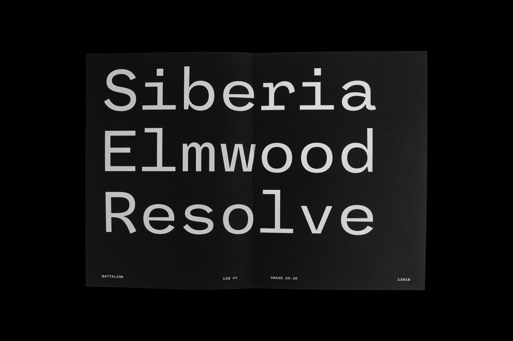
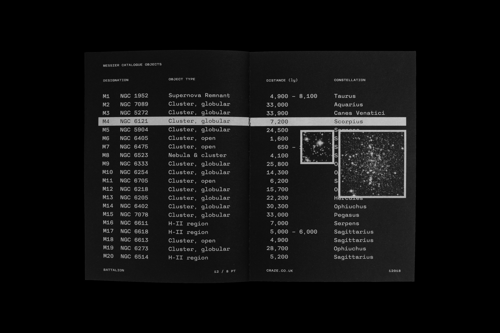

A characterful monospace typeface (2018)
The final project for my bachelor in graphic design at Falmouth University. Battalion is a wide monospace typeface based on a grotesque construction. I made only one weight, but with extended latin support and full small caps.

Specimen booklet · Examples of typography and glyphs in various sizes.
